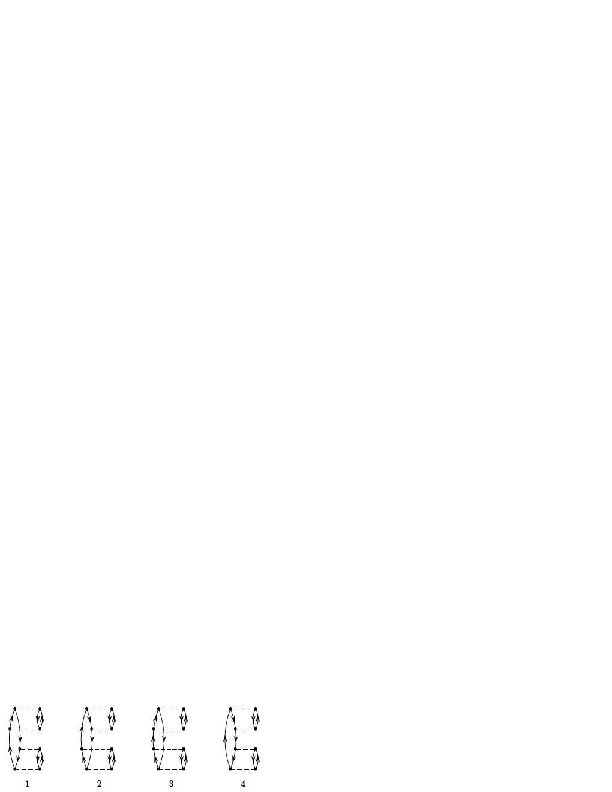
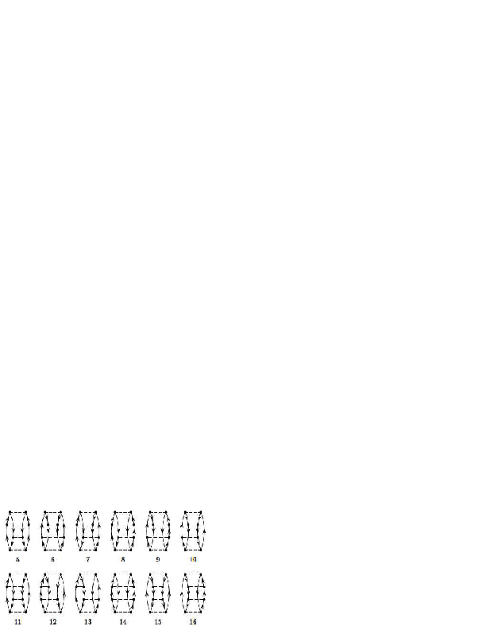

Projects and how do develop a numerical project
July 6-24, Ganil, Caen, France
Table of contents
Plan for the Talent course
Outline of the project(s)
Some basic ingredients for a successful numerical project
The pairing model as warm-up problem
Exercise 1: Pairing Hamiltonian
Project 2: Coupled cluster calculations with doubles excitations only for the pairing model
Project 3: Coupled cluster calculations with doubles excitations only for infinite nuclear matter
Project 4: Coupled cluster calculations with doubles excitations only for finite nuclei
Project 5: Green's function calculations with doubles excitations only for the pairing model
Project 6: Green's function calculations with doubles excitations only for infinite nuclear matter
Project 7: Green's function calculations with doubles excitations only for finite nuclei
Plan for the Talent course
An essential element of the Talent courses is to develop a large project(s) which allows you to study and understand teoretical concepts in nuclear physics. These concepts will in turn allow you to interpret results from experiments and understand the pertinent physics in terms of the underlying forces and laws of motion.Together with the regular lectures in the morning, the hope is that during these three weeks you will be able to write and run a program which implements at least one of the methods discussed during the lectures. The lectures will also cover additional material which aims at giving you a broader view on what can be achieved with the methods to be discussed. Combined with the 'hands-on' afternoon sessions, the hope is that the lectures and the computational projects will together allow you to achieve these goals. For those of you who would like to get credits to be transferred to your home university, the project(s) can be extended upon allowing you to include further elements to the many-body methods. The load of the final project is estimated to be 80 hours. In total, attendence at the course and doing the final project amounts to seven ECTS. There is no credit transfer for Northern-American students.
Outline of the project(s)
What is outlined here are several paths that will allow you to develop a program which can be used to study nuclear systems. In particular, we will focus on two widely used many-body methods, coupled cluster theory with its various approximations and Green's function theory.
Before we begin, we would however like to present a warm-up problem which contains many of the basic elements of the many-body methods exposed in this course. Furthermore, the simple pairing model described below, provides us with benchmark results to which we can compare the different many-body methods. The basic elements of the model (single-particle basis and Hamiltonian) can easily be (if structured properly in your program) extended to studies of more realistic systems, either finite systems like nuclei or infinite nuclear matter.
The first part of the project is a traditional paper and pencil part, where the aim is to apply second quantization in order to set up the Hamiltonian matrix to be diagonalized. We will study this model the first two afternoons of the school.
At most, with four particles in four doubly degenerate single particle states and no broken pairs, you will have a \( 6 \times 6 \) Hamiltonian matrix to diagonalize. Below, you will find a simple python program which performs the diagonalization and plots the eigenvalues. Parts of this warm-up exercise are solved below. These aspects will be discussed partly during the lectures but also during some of the afternoon sessions. Practical guidelines for code writing will also be discussed.
This exercise will allow us to start writing our first skeleton for a coupled cluster theory program at the so-called doubles level of truncation. It will also, for those of you who will prefer to study Green's functions, serve as a starting point for developing the skeleton of a program for this method. The aim is to finish this part of the program during the first week.
With a program which then benchmarks the simple pairing model, we will turn our attention to more realistic systems. Here we propose the following paths that can be studied with either coupled cluster theory or Green's function theory. Many of the technicalities will be discussed at the lectures and the afternoon sessions during the last two weeks.
- Studies of nuclear matter with a cartesian basis using coupled cluster theory at the level of doubles excitations
- During the three weeks of the course we will mainly focus on two-particle and two-hole excitations
- Focusing only on two-particle correlations in a finite cartesian basis, these can be compared with Brueckner-Hartree-Fock calculations in the infinite limit. The latter should represent exactly two-particle correlations to infinite order. A simple model for the nuclear force will be used.
- For the final project the code can be extended to include particle-hole correlations as well
- Studies of finite nuclei using coupled cluster theory at the level of doubles excitations only
- Here we will provide Hartree-Fock based single-particle states and two-body interactions in an uncoupled scheme.
- The system to be studied is that of neutrons in harmonic oscillator traps.
- For the final project, one can include singles excitations as well.
- The two above paths can be performed using Green's function as well.
- Studies of infinite nuclear matter including two-particle and two-hole correlations using a cartesian basis.
- Comparison of two-particle correlations from Brueckner-Hartree-Fock calculations in the infinite limit
- Studies of finite nuclei with the Green's function method
- Again we will provide Hartree-Fock based single-particle states and two-body interactions in an uncoupled scheme.
- The system to be studied is that of neutrons in harmonic oscillator traps.
- For the final project, one can include self-consistently calculated single-particle energies as well.
If you have not used version control before now, it is time to do so. Proper version control is central to a good ethical scientific conduct. We do require that you use some kind of version control software when working on the projects. We recommend strongly github.
Furthermore, before coming to the course, we recommend that you refresh your knowledge on second quantization. If your background in second quantization is rudimentary and mentioning of Wick's leave you gazing at the stars, we recommend that you study the material at the course web site on second quantization. Try in particular to do some of the exercises.
We will also require that you come with your own laptop and have installed either a
- Fortran compiler or a
- c++ compiler
Some basic ingredients for a successful numerical project
In when building up a numerical project there are several elements you should think of
- How to structure a code in terms of functions
- How to make a module
- How to read input data flexibly from the command line
- How to create graphical/web user interfaces
- How to write unit tests (test functions or doctests)
- How to refactor code in terms of classes (instead of functions only), in our case you think of a system and a solver class
- How to conduct and automate large-scale numerical experiments
- How to write scientific reports in various formats (LaTeX, HTML)
- New code is added in a modular fashion to a library (modules)
- Programs are run through convenient user interfaces
- It takes one quick command to let all your code undergo heavy testing
- Tedious manual work with running programs is automated,
- Your scientific investigations are reproducible, scientific reports with top quality typesetting are produced both for paper and electronic devices.
The pairing model as warm-up problem
We present a simplified Hamiltonian consisting of an unperturbed Hamiltonian and a so-called pairing interaction term. It is a model which to a large extent mimicks some central features of atomic nuclei, certain atoms and systems which exhibit superfluiditity or superconductivity. To study this system, we will use a mix of many-body perturbation theory (MBPT), Hartree-Fock (HF) theory and full configuration interaction (FCI) theory. The latter will also provide us with the exact answer. When setting up the Hamiltonian matrix you will need to solve an eigenvalue problem.
We define first the Hamiltonian, with a definition of the model space and the single-particle basis. Thereafter, we present the various exercises.
The Hamiltonian acting in the complete Hilbert space (usually infinite dimensional) consists of an unperturbed one-body part, \( \hat{H}_0 \), and a perturbation \( \hat{V} \).
We limit ourselves to at most two-body interactions, our Hamiltonian is then represented by the following operators $$ \hat{H} = \sum_{\alpha\beta}\langle \alpha |h_0|\beta\rangle a_{\alpha}^{\dagger}a_{\beta}+\frac{1}{4}\sum_{\alpha\beta\gamma\delta}\langle \alpha\beta| V|\gamma\delta\rangle a_{\alpha}^{\dagger}a_{\beta}^{\dagger}a_{\delta}a_{\gamma}, $$ where \( a_{\alpha}^{\dagger} \) and \( a_{\alpha} \) etc. are standard fermion creation and annihilation operators, respectively, and \( \alpha\beta\gamma\delta \) represent all possible single-particle quantum numbers. The full single-particle space is defined by the completeness relation $$ \hat{{\bf 1}} = \sum_{\alpha=1}^{\infty}|\alpha \rangle \langle \alpha|. $$ In our calculations we will let the single-particle states \( |\alpha\rangle \) be eigenfunctions of the one-particle operator \( \hat{h}_0 \). Note that the two-body part of the Hamiltonian contains anti-symmetrized matrix elements.
The above Hamiltonian acts in turn on various many-body Slater determinants constructed from the single-basis defined by the one-body operator \( \hat{h}_0 \). As an example, the two-particle model space \( \mathcal{P} \) is defined by an operator $$ \hat{P} = \sum_{\alpha\beta =1}^{m}|\alpha\beta \rangle \langle \alpha\beta|, $$ where we assume that \( m=\dim(\mathcal{P}) \) and the full space is defined by $$ \hat{P}+\hat{Q}=\hat{{\bf 1}}, $$ with the projection operator $$ \hat{Q} = \sum_{\alpha\beta =m+1}^{\infty}|\alpha\beta \rangle \langle \alpha\beta|, $$ being the complement of \( \hat{P} \).
Our specific model consists of \( N \) doubly-degenerate and equally spaced single-particle levels labelled by \( p=1,2,\dots \) and spin \( \sigma=\pm 1 \). These states are schematically portrayed in Fig. 1. The first two single-particle levels define a possible model space, indicated by the label \( \mathcal{P} \). The remaining states span the excluded space \( \mathcal{Q} \).
We write the Hamiltonian as $$ \hat{H} = \hat{H}_0 + \hat{V} , $$ where $$ \hat{H}_0=\xi\sum_{p\sigma}(p-1)a_{p\sigma}^{\dagger}a_{p\sigma} $$ and $$ \hat{V}=-\frac{1}{2}g\sum_{pq}a^{\dagger}_{p+} a^{\dagger}_{p-}a_{q-}a_{q+}. $$ Here, \( H_0 \) is the unperturbed Hamiltonian with a spacing between successive single-particle states given by \( \xi \), which we will set to a constant value \( \xi=1 \) without loss of generality. The two-body operator \( \hat{V} \) has one term only. It represents the pairing contribution and carries a constant strength \( g \).
The indices \( \sigma=\pm \) represent the two possible spin values. The interaction can only couple pairs and excites therefore only two particles at the time, as indicated by the rightmost four-particle state in Fig. 1. There one of the pairs is excited to the state with \( p=9 \) and the other to the state \( p=7 \). The two middle possibilities are not possible with the present model. We label single-particle states within the model space as hole-states. The single-particle states outside the model space are then particle states.
In our model we have kept both the interaction strength and the single-particle level as constants. In a realistic system like an atom or the atomic nucleus this is not the case.
Figure 1: Schematic plot of the possible single-particle levels with double degeneracy. The filled circles indicate occupied particle states while the empty circles represent vacant particle(hole) states. The spacing between each level \( p \) is constant in this picture. The first two single-particle levels define our possible model space, indicated by the label \( \mathcal{P} \). The remaining states span the excluded space \( \mathcal{Q} \). The first state to the left represents a possible ground state representation for a four-fermion system. In the second state to the left, one pair is broken. This possibility is however not included in our interaction.

Exercise 1: Pairing Hamiltonian
a) Show that the unperturbed Hamiltonian \( \hat{H}_0 \) and \( \hat{V} \) commute with both the spin projection \( \hat{S}_z \) and the total spin \( \hat{S}^2 \), given by $$ \hat{S}_z := \frac{1}{2}\sum_{p\sigma} \sigma a^{\dagger}_{p\sigma}a_{p\sigma} $$ and $$ \hat{S}^2 := \hat{S}_z^2 + \frac{1}{2}(\hat{S}_+\hat{S}_- + \hat{S}_-\hat{S}_+), $$ where $$ \hat{S}_\pm := \sum_{p} a^{\dagger}_{p\pm} a_{p\mp}. $$ This is an important feature of our system that allows us to block-diagonalize the full Hamiltonian. We will focus on total spin \( S=0 \). In this case, it is convenient to define the so-called pair creation and pair annihilation operators $$ \hat{P}^{+}_p = a^{\dagger}_{p+}a^{\dagger}_{p-}, $$ and $$ \hat{P}^{-}_p = a_{p-}a_{p+}, $$ respectively.
Show that you can rewrite the Hamiltonian (with \( \xi=1 \)) as $$ \hat{H}=\sum_{p\sigma}(p-1)a_{p\sigma}^{\dagger}a_{p\sigma} -\frac{1}{2}g\sum_{pq}\hat{P}^{+}_p\hat{P}^{-}_q. $$ Show also that Hamiltonian commutes with the product of the pair creation and annihilation operators. This model corresponds to a system with no broken pairs. This means that the Hamiltonian can only link two-particle states in so-called spin-reversed states.
b) Construct thereafter the Hamiltonian matrix for a system with no broken pairs and total spin \( S=0 \) for the case of the four lowest single-particle levels indicated in the Fig. 1. Our system consists of four particles only. Our single-particle space consists of only the four lowest levels \( p=1,2,3,4 \). You need to set up all possible Slater determinants. Find all eigenvalues by diagonalizing the Hamiltonian matrix. Vary your results for values of \( g\in [-1,1] \). We refer to this as the exact calculation. Comment the behavior of the ground state as function of \( g \).
We give first the final Hamiltonian matrix $$ H = \left ( \begin{array}{cccccc} 2\delta -g & -g/2 & -g/2 & -g/2 & -g/2 & 0 \\ -g/2 & 4\delta -g & -g/2 & -g/2 & -0 & -g/2 \\ -g/2 & -g/2 & 6\delta -g & 0 & -g/2 & -g/2 \\ -g/2 & -g/2 & 0 & 6\delta-g & -g/2 & -g/2 \\ -g/2 & 0 & -g/2 & -g/2 & 8\delta-g & -g/2 \\ 0 & -g/2 & -g/2 & -g/2 & -g/2 & 10\delta -g \end{array} \right ) $$ The following python program diagonalizes the above Hamiltonian matrix for a given span of interaction strength values, performing both a full configuration interaction calculation and a truncated one. For the truncated case we leave out the \( 4p4h \) state. This means that in addition to the ground state we include the four possible \( 2p2h \) states. Such a calculation is normally called a configuration interaction calculation.
Numerically, we find the eigenvalues and eigenvectors of this matrix. The lowest eigenvalue then corresponds to the ground state energy. Numerically, we can generate the Hamiltonian matrix and find the eigenvalue for any value of \( g \), effectively giving us the ground state energy as a function of the strength of the interaction. We will refer to that energy as the exact energy of the system.
From our results, we now see some important differences between FCI and CI. Full configuration interaction is an exact method, but is only possible if and only if we have a complete and finite SD basis for our system. In practice, we usually don't have this. Non-complete CI however, is always possible, but gives the only approximative results. The method is variational however, so we are always guaranteed that the approximation will be equal or bigger to the true result. Perturbation theory however, is non-variational and there is no guarantee that including higher orders in the perturbation gives an improved result, as we will see below.
In an FCI case, we are including all possible exictations to infinite order, meaning we have all possible 1p1h SDs, all possible 2p2h SDs and so on. In the CI case, we truncate those excitations somewhere. In our example we limited the excitations to at most 2p2h. We still got the contribution from those 2p2h excitation to infinite order. If we were to draw the diagrams of the interactions that contribute to this CI case, there would be an infinite number of them, as we can have arbitrarily long chains of operators that still only have at most 2p2h intermediate states.
c) We switch now to approximative methods, in our case Hartree-Fock theory and many-body perturbation theory. Hereafter we will define our model space to consist of the single-particle levels \( p=1,2 \). The remaining levels \( p=3,4 \) define our excluded space. This means that our ground state Slater determinant consists of four particles which can be placed in the doubly degenerate orbits \( p=1 \) and \( p=2 \). Our first step is to perform a Hartree-Fock calculation with the pairing Hamiltonian. Write first the normal-ordered Hamiltonian with respect to the above reference state given by four spin \( 1/2 \) fermions in the single-particle levels \( p=1,2 \). Define what is meant by a canonical Hartree-Fock case, a non-canonical case and a general case. For all three cases, write down the normal-ordered Hamiltonian and draw the diagrammatic form of the Hamiltonian for all three cases.
d) We will now set up the Hartree-Fock equations by varying the coefficients of the single-particle functions. The single-particle basis functions are defined as $$ \psi_p = \sum_{\lambda} C_{p\lambda}\psi_{\lambda}. $$ where in our case \( p=1,2,3,4 \) and \( \lambda=1,2,3,4 \), that is the first four lowest single-particle orbits of Fig. 1. Set up the Hartree-Fock equations for this system by varying the coefficients \( C_{p\lambda} \) and solve them for values of \( g\in [-1,1] \). Comment your results and compare with the exact solution. Discuss also which diagrams in Fig. 2 that can be affected by a Hartree-Fock basis. Compute the total binding energy using a Hartree-Fock basis and comment your results.
e) We will now study the system using non-degenerate Rayleigh-Schroedinger perturbation theory to third order in the interaction. If we exclude the first order contribution, all possible diagrams (so-called anti-symmetric Goldstone diagrams) are shown in Fig. 2.
Figure 2: Diagrams to third order in the interaction, including also non-canonical Hartree-Fock diagrams. The first order term is excluded. All interaction vertices represent anti-symmetrized matrix elements.
}
Based on the form of the interaction, which diagrams contribute to the binding energy of the ground state? Write down the expressions for the diagrams that contribute and find the contribution to the ground state energy as function \( g\in [-1,1] \). Comment your results. Compare these results with those you obtained from the exact diagonalization with and without the \( 4p-4h \) state. Discuss your results for a canonical Hartree-Fock basis and a non-canonical Hartree-Fock basis.
f) Diagram 1 in Fig. 2 represents a second-order contribution to the energy and a so-called \( 2p-2h \) contribution to the intermediate states. Write down the expression for the wave operator in this case and compare the possible contributions with the configuration interaction calculations without the \( 4p-4h \) Slater determinant. Comment your results for various values of \( g\in [-1,1] \).
g) We limit now the discussion to the canonical Hartree-Fock case only. To fourth order in perturbation theory we can produce diagrams with \( 1p-1h \) intermediate excitations as shown in Fig. 3, \( 2p-2h \) excitations, see Fig. 4, \( 3p-3h \) excitations as shown in Fig. 5 and finally so-called diagrams with intermediate four-particle-four-hole excitations, see Fig. 6.
Figure 3: One-particle-one-hole excitations to fourth order.

Figure 4: Two-particle-two-hole excitations to fourth order.

Figure 5: Three-particle-three-hole excitations to fourth order.

Figure 6: Four-particle-four-hole excitations to fourth order.

Define first linked and unlinked diagrams and explain briefly Goldstone's linked diagram theorem. Based on the linked diagram theorem and the form of the pairing Hamiltonian, which diagrams will contribute to fourth order?
Calculate the energy to fourth order with a canonical Hartree-Fock basis for \( g\in [-1,1] \) and compare with the full diagonalization case in exercise b). Discuss the results.
We now turn to MBPT to the fourth order. We now get a lot of diagrams that can contribute to the energy, so we limit our discussion to the canonical HF-case only. All of the diagrams in the canonical case are shown in figures 3, 4, 5 and 6 above. In our case howeber, due the nature of the pairign Hamiltonian, only few of these diagrams give non-zero contributions. Using also the linked diagram theorem, where a diagram is called unlinked if and only if it has a disconnected part that is closed, we can eliminate some of the diagrams. Goldstones linked-diagram theorem states that all unliked diagrams will cancel agains the renormalization terms in RSPT, meaning that we can define the energy and wave function in each order as a sum of linked diagrams only. We can then disregard diagram 33 and 41.
Let us now go through all the diagrams and find those that vanish due to having broken pairs, i.e., the diagrams that vanish due to our specific interaction. Take for example diagram 1, which vanishes due to having a term \( \langle ab\vert \hat{v} \vert ci\rangle \). From this argument, we see that all four diagrams from figure 3 vanish. Similar arguments shows that most diagrams in figure 4 also dissapear. Going through all the diagrams, we see that 5, 6, 14 and 15 are the ones that do not vanish for figure 4. For figure 5 we actually see that all diagrams vanish again. For figure 6 we already found that 33 and 41 vanished due to being unlinked—the rest contribute to the perturbation.
All diagrams for figure 3 and 5 vanished for our interaction, this is definitly not a surprise, as those figures correspond to 1p1h and 3p3h excitations respectively. As our reference state already has the four particles positioned in two pairs, it goes without saying that and odd number of particle excitations requires broken pairs and will vanish. The same argument also explained why there were no diagrams that vanished for figure 6. That figure shows the four-particle-four hole excited states, but as we only have four particles in our system, exciting all the particles will keep them collected in pairs, so we get no ubroken pairs. For the diagrams in figure 4 however, we have 2p2h excitations. The diagrams that vanish correspond to the cases where we excite one particle from either pair, or excite both particles in one pair, but into different levels, leaving us with a broken pair.
The expressions for these diagrams can easily be written in terms of a simple Python program. Note however that for every diagram we do actually perform loops over every single-particle state. As we will see later this is extremely inefficient from a computational point view. In our discussions of the projects below, we will rewrite the computations of most diagrams in terms of efficient matrix-matrix multiplications or matrix-vector multiplications. The following Python program gives us the final results for perturbation to fourth order, where we also make a plot of the relative error in the correlation energy. That is, we compare the computed correlation in perturbation theory with the result from the exact diagonalization.
Running the Python program shows us the approximation to both second and third order are very good when the interaction is weaker \( g\in[-0.5,0.5] \), but as the interaction gets stronger the approximation worsens. We also note that the third-order is actually worse than the second order for a strong interaction! This result illuminates the difference between perturbation theory and configuration interaction we noted earlier, including higher-order terms can possibly give a worse result for perturbation theory. For CI however, including more excitations will never give a worse result. We also see the consequences of perturbation theory not being a variational method, as both approximations undershoot the true ground state correlation energy of the system.
From the results, we note also that the fourth order MBPT approximation to the correlation energy is better than the lower orders for \( g < 0 \), but worse than the lower orders for \( g>0 \). Again this shows us an the important point of MBPT. There is no guarantee that the approximation will converge to the exact solution as we increase the order. In fact, as we see in our case, increasing the order of the approximation might actually give you a worse result! Also, we see that MBPT is not variational, so we can't simply calculate the approximation of many different orders and choose the smallest one, as we then run the risk of undershooting the real ground state energy.
Project 2: Coupled cluster calculations with doubles excitations only for the pairing model
This project serves as a continuation to the pairing model with the aim being to solve the same problem but now by developing a program that implements the coupled cluster method with double excitations only. In doing so you will find it convenient to write classes which define the single-particle basis and the Hamiltonian. Your functions that solve the coupled cluster equations will then just need to set up variables which point to interaction elements and single-particle states with their pertinent quantum numbers. Use for example the setup discussed in the FCI lectures for the pairing model.
a) Explain why no single excitations are involved in this model.
b) Set up the coupled cluster equations for doubles excitations and convince yourself about their meaning and correctness.
c) Write a class which holds single-particle data like specific quantum numbers, single-particle Hamiltonian etc. Write also a class which sets up and stores two-body matrix elements defined by the single-particle states. Write thereafter functions/classes which implement the coupled cluster method with doubles only.
d) Compare your results with those from the exact diagonalization with and without the \( 4p4h \) excitation. Compare also your results to perturbation theory at different orders, in particular to second order. Discuss your results.
Project 3: Coupled cluster calculations with doubles excitations only for infinite nuclear matter
a) Explain why we don't have single excitations in infinite matter.
b) Set up the relavent quantum numbers for a cartesian basis with plane waves in three dimensions. Make the according changes to the code you developed in connection with the pairing model. Implement periodic boundary conditions.
c) Replace the two-body interaction from the pairing model with the Minnesota potential model (to be inserted here later).
d) Use the program you developed in connection with the pairing model to perform coupled cluster calculations in infinite matter with doubles excitations. Perform coupled cluster calculations for infinite nuclear matter with the Minnesota interaction for different particle numbers (to be inserted later). Limit yourself to two-particle and two-hole intermediate excitations only.
e) Compare the two-particle only excitations with a finite number of particles with results obtained with Brueckner-Hartree-Fock calculations in the thermodynamic limit. Comment your results
f) The final challenge is to include particle-hole excitations and compare the results with those from Diffusion Monte Carlo calculations (insert ref here). This part can be included in the final project.
Project 4: Coupled cluster calculations with doubles excitations only for finite nuclei
a) Add material here
Project 5: Green's function calculations with doubles excitations only for the pairing model
a) Explain why no single excitations are involved in this model.
b) Set up the Green's function equations for doubles excitations and convince yourself about their meaning and correctness.
c) Write a class which holds single-particle data like specific quantum numbers, single-particle Hamiltonian etc. Write also a class which sets up and stores two-body matrix elements defined by the single-particle states. Write thereafter functions/classes which implement the Green's function method with doubles only.
d) Compare your results with those from the exact diagonalization with and without the \( 4p4h \) excitation. Compare also your results to perturbation theory at different orders, in particular to second order. Discuss your results. If other groups are solving the same problem with the coupled cluster method, discuss these results as well.
Project 6: Green's function calculations with doubles excitations only for infinite nuclear matter
a) Explain why we don't have single excitations in infinite matter.
b) Set up the relavent quantum numbers for a cartesian basis with plane waves in three dimensions. Make the according changes to the code you developed in connection with the pairing model. Implement periodic boundary conditions.
c) Replace the two-body interaction from the pairing model with the Minnesota potential model (to be inserted here later).
d) Use the program you developed in connection with the pairing model to perform Green's function calculations in infinite matter with doubles excitations. Perform Green's function calculations for infinite nuclear matter with the Minnesota interaction for different particle numbers (to be inserted later). Limit yourself to two-particle and two-hole intermediate excitations only.
e) Compare the two-particle only excitations with a finite number of particles with results obtained with Brueckner-Hartree-Fock calculations in the thermodynamic limit. Comment your results
Project 7: Green's function calculations with doubles excitations only for finite nuclei
a) Add material here